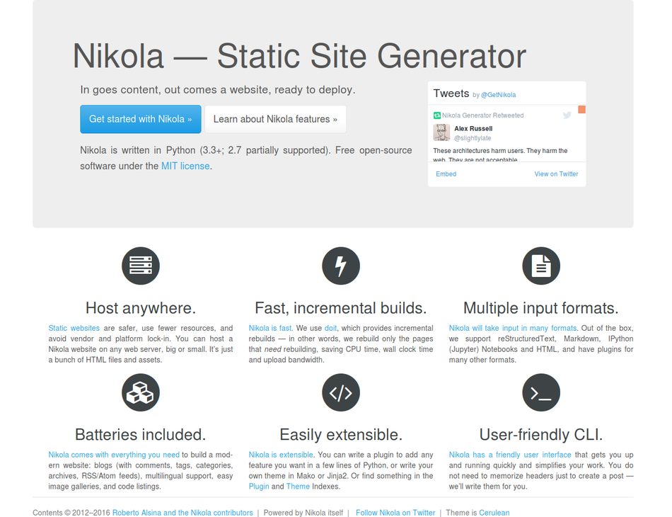

Hello World!
“Doesn’t matter if you can dream it or not, all that matters is if you can begin it or not? Take that first step.”
Vikrmn, Corpkshetra

В своём первом блоге хочется написать пару строк о том, без чего не получилось бы реализовать данный замысел, высказать мысли о выборе сервисов и поблагодарить комьюнити, которое разрабатывают и поддерживают данные технологии. Итак, поехали.
Генератор статических сайтов Nikola ¶
Основной критерий выбора: он должен использовать Python. Пожалуй, самый известный из генераторов статических сайтов для Python - Pelican . К сожалению, я не успел его опробовать. В интернете есть замечательная статья о тонкостях настройки Pelican https://the-bosha.ru/2016/05/04/generator-staticheskih-blogov-pelican/. Моё внимание привлёк Nicola. И в принципе, очень доволен выбором. Огромным преимуществом для меня была встроенная поддержка Jupyter notebooks (о чём расскажу ниже). Плюсом есть поддержка и доброжелательность комьюнити. К примеру, на свой вопрос я получил мгновенный ответ через Nikola Generator Twitter .
Полезные ссылки:
- Официальная документация https://getnikola.com/handbook.html
- PyPI link https://pypi.python.org/pypi/Nikola/
- How I customized my Nikola-powered site
- Nikola: the static blog engine A.K.A. How I build Shisaa.jp
- Starting a Personal Blog with Nikola
- Nikola, one kickass Site and Blog generator
И, конечно, 'last but not least' - этот генератор назван в честь выдающегося ученого и изобретателя Николы Теслы. Есть и определённые минусы, не всё гладко с отображением кириллицы (по крайней мере, я с этим столкнулся и пришлось подбирать шрифт), не всё в документации прописано прозрачно и многие моменты пробовал интуитивно. Но всё это мелочи по сравнению с огромным потенциалом, заложенным в данный генератор статических сайтов.